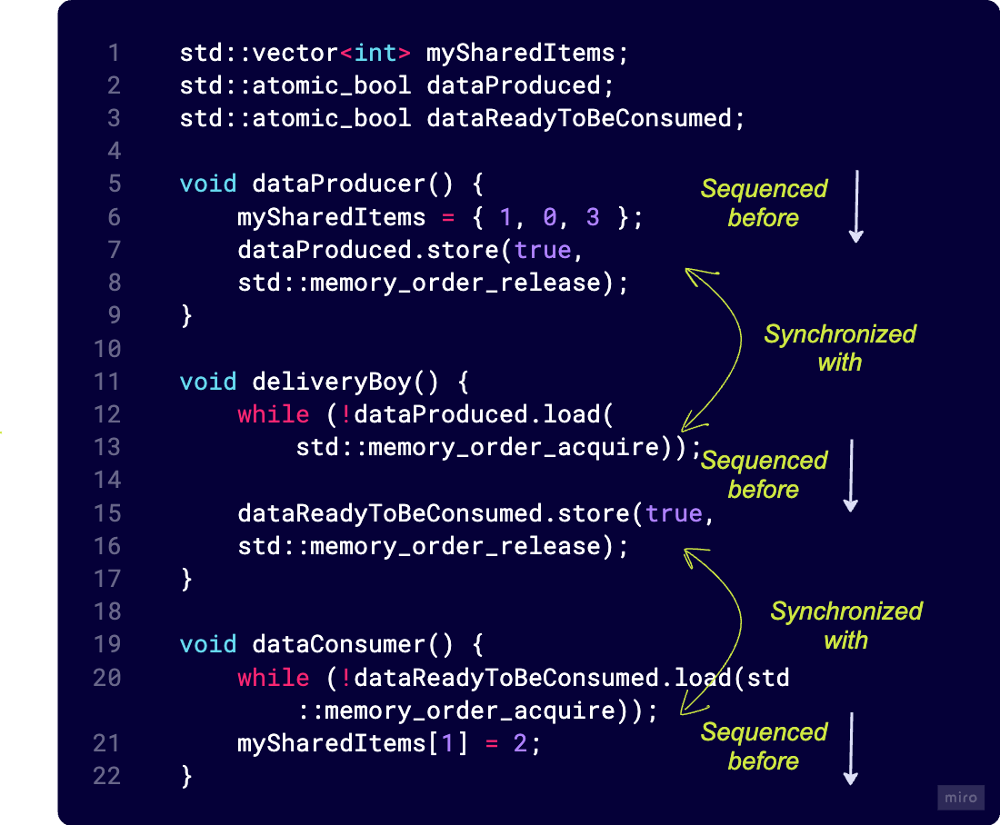

Introduction
Atomic operations are indivisible. Consider, for instance a shared variable counter that is initialized to 0. Consider the assembly instructions corresponding to the increment operation count++.
Look at the assembler code generated by the compiler and the instructions the CPU executes.
counter:
.zero 4
main:
push rbp
mov rbp, rsp
mov eax, DWORD PTR counter[rip]
add eax, 1
mov DWORD PTR counter[rip], eax
mov eax, 0
pop rbp
retThe code increments a global counter. The statement on line 6, copies the value stored in the counter to the eax register, line 7 adds 1 to the value stored in eax, and finally line 8 copies back the contents of the eax register to the counter variable. So, a thread could execute line 6 and then be scheduled out, and another thread execute all threee instructions after that. When the first thread finishes increment the result, the counter will be increment just once and thus the result will incorrect.
The following code does the same: it increments a global counter. This time, though, we use an atomic type and operations.
I will explain the std::atomic<int> type and the atomic increment operation later. The generated assembly code is the following:
Just one instruction has been generated to add 1 to the value stored in the counter variable. The lock prefix here means that the following instruction (in this case add) is going to be executed atomically. Hence, a thread cannot be interrupted in the middle of incrementing the counter.
Atomic operations allow threads to read, modify and write indivisibly and can also be used as synchronization primitives. Atomic operations must be provided by the CPU (as in the lock add instruction).
Non-Blocking Data-Structures
Data-structures synchronized with locks are called blocking data-structures because threads are blocked (by the operating system), waiting until the locks become available.
Data-structures that don’t use locks are called non-blocking data structures. Most (but not all) of them are lock-free.
A data-structure or algorithm is considered lock-free if each synchronized action completes in a finite number of steps, not allowing indefinite waiting for a condition to become true or false.
The types of lock-free data structures are the following:
Obstruction-free: A thread will complete its operation in a bounded number of steps if all other threads are suspended.
Lock-free: Atleast one thread will complete its operation in a bounded number of steps while multiple threads are working on the data-structure.
Wait-free: All threads will complete their operations in a bounded number of steps while multiple threads are working on the data-structure.
Memory Access
Memory order refers to the order in which memory(that is, the variables in a program) are accessed. Memory can be either read or write(load and store). But, what is the actual order in which the variables of a program are accessed? For the following code, there are \(3\) points of view: the written code order, the compiler-generated instructions order, and finally, the order in which the instructions are executed by the CPU. These \(3\) orderings can all be the same or (more likely) different.
The first and obvious ordering is the one in the code.
The func_1 function first adds \(1\) to the variable a, then adds \(10\) to the variable b and finally adds \(2\) to the variable a. This is our intention and the order in which we define the statements to be executed.
When compiling the code to assembly, the compiler may change the order of the statements to make the generate code more efficient provided the outcome of the code execution is unchanged. For example, with the preceding code, the compiler could either do the two additions with variable a first and then the addition with variable b, or it could simply add 3 to a and 10 to b.
If we define func_2 as:
the compiler generates:
In this case, the CPU could execute the instructions out of order, as there is no dependency among the operations.
Consider func_3(int&, int&) defined as:
In this case, the operation on b depends on the previous operation on a, so the compiler cannot reorder the statements, and the generated code will be like the code we write (same order of operations).
func_3(int&, int&):
mov eax, DWORD PTR [rdi]
lea edx, [rax+1]
add eax, 11
mov DWORD PTR [rdi], edx
add DWORD PTR [rsi], eax
add DWORD PTR [rdi], 2
retTo conclude, the source code order, the compiler generated object-code order and the actual exection order on a multi-core CPU will differ.
Modification Order
Any entity with a type T that has a lifetime and occupies storage in memory is an object. Every object in a C++ program has a modification order, consisting of all writes to that object from all the threads in the program, starting with the object’s initialization. In multi-threaded code, the modification order may vary between runs, but in a given execution of the program, all threads must agree on the order.
If distinct threads see distinct sequences of values for a single variable, we have a data-race and UB.
Certain kinds of speculative execution aren’t permitted. Once a thread has seen a particular entry in the modification order, subsequent reads from the same thread must return later values and subsequent writes to that object must occur later in the modification order. A read of an object that follows a write to that object in the same thread must either return the same value or another value that occurs later in the modification order. Although all threads must agree on the modification orders of each individual object, they may not necessarily agree on the relative ordering of operations on separate objects.
Memory Model
Typically, each core in a multi-core processor has dedicated store buffers, its own L3 cache. A pair of cores often share the L2 cache. All cores share the L1 cache and the global main memory. So, the below picture is a more accurate mental model of a modern microprocessor.

Consider 2 globally declared atomic flags flag1 and flag2. Assume that thread_1 executes on processor-1 and thread_2 executes on processor-2 and all reads and writes are atomic.
Essentially, thread_1 declares its intent to enter a critical section by setting flag1 = 1. A flag1.store(1) operation writes flag1 = 1 to the store buffer. Concurrently, thread_2 declares its intent to enter the critical section by setting flag2 = 1. A flag2.store(1) operation writes flag2 = 1 the processor’s store buffer.
thread_1 reads the value of flag2 from the global main memory, which is 0 (since processor-2’s buffer has not been flushed). Hence, the predicate !flag2 is satisfied and the thread_1 enters the critical section. Similarly, thread_2 reads the value of flag1 from the global main memory, which is also 0 and enters the critical section at the same time.
\(1\) nanosecond later, the contents of the store buffers on processor-1 and process-2 are flushed to main memory.
Thus, we need synchronization and some form of ordering to prevent undefined behavior.
Sequential consistency
std::memory_order_seq_cst has two implications. The operations of a program(thread) will always be executed in source code order.
In a given execution, there is a single global ordering of all operations tagged memory_order_seq, and all threads observe the same global order.
#include <iostream>
#include <atomic>
#include <thread>
std::atomic<int> x = ATOMIC_INT_LOCK_FREE;
std::atomic<int> y = ATOMIC_INT_LOCK_FREE;
int main() {
std::thread t1(
[&]() {
x.store(42);
int result1 = y.load();
}
);
std::thread t2(
[&]() {
y.store(17);
int result2 = x.load();
}
);
}Sequential ordering is also the default memory ordering.
x.store(42) will always be performed before y.load(). y.store(17) will always be performed before x.load(). That is the guarantee of the sequential consistency. And each thread sees operations of the other thread in the same order. This respects our intuition.
How many ways exist to perform these 4 operations? Extremely easy! There are 6 possibilities.

To further elaborate, consider the below snippet:
// Ref: Asynchronous programming with C++
// Javier Reguera Salgado
#include <iostream>
#include <atomic>
#include <thread>
#include <vector>
std::atomic<bool> x{ false };
std::atomic<bool> y{ false };
std::atomic<int> z{ 0 };
void write_x() {
x.store(true, std::memory_order_seq_cst);
}
void write_y() {
y.store(true, std::memory_order_seq_cst);
}
void read_x_then_y() {
while (!x.load(std::memory_order_seq_cst));
if (y.load(std::memory_order_seq_cst))
++z;
}
void read_y_then_x() {
while (!y.load(std::memory_order_seq_cst));
if (x.load(std::memory_order_seq_cst))
++z;
}
int main() {
std::thread t1(write_x);
std::thread t2(write_y);
std::thread t3(read_x_then_y);
std::thread t4(read_y_then_x);
t1.join();
t2.join();
t3.join();
t4.join();
std::cout << "\n" << "x = " << x;
std::cout << "\n" << "y = " << y;
std::cout << "\n" << "z = " << z;
}Under no circumstances, the value of z will be equal to 0. Either the write_x goes before write_y or write_y goes before write_x. All threads observe the same global order of events.
Non-sequential memory ordering
On the opposite end of the spectrum is relaxed ordering. In the absence of other ordering constraints, the only requirement is that threads agree on the modification order of each variable. Operations on distinct variables can appear in different orders on different threads.
// Ref: Concurrency in Action, Anthony Williams
#include<atomic>
#include<thread>
#include<assert.h>
std::atomic<bool> x,y;
std::atomic<int> z;
void write_x_then_y()
{
x.store(true, std::memory_order_relaxed); // [1]
y.store(true, std::memory_order_relaxed); // [2]
}
void read_y_then_x()
{
while(!y.load(std::memory_order_relaxed)); //[3]
if(x.load(std::memory_order_relaxed))
++z; //[4]
}
int main(){
x = false;
y = false;
z = 0;
std::thread a(write_x_then_y);
std::thread b(read_y_then_x);
a.join();
b.join();
assert(z.load()!=0); //[5]
}This time the assert at [5] can be false, because the x.load() can read false, even though the load of y reads true and the store of x happens before the store of y.
x and y are different variables so there are no ordering guarantees relating to the visbility of variables. Relaxed operations on different variables can be freely reordered (provided they obey any happens before relationships in the same thread). They don’t introduce synchronizes-with relationships.
Even though there is a happens-before relationship between the stores and between the loads, the store of y does not synchronize with the load of y. So, the reader thread can see the stores out of order.
There’s another cool example I played around with, from Anthony William’s book, Concurrency in Action.
// Relaxed operations on multiple threads
// Ref: Concurrency in action, Anthony Williams
#include<thread>
#include<atomic>
#include<iostream>
std::atomic<int> x{0}, y{0}, z{0};
std::atomic<bool> go{false};
const uint loop_count{10};
struct Snapshot{
int x;
int y;
int z;
};
Snapshot snapshots[5][loop_count];
void increment(std::atomic<int>* var_to_inc, Snapshot* snapshots){
while(!go)
std::this_thread::yield(); // Spin, waiting for the signal
for(unsigned i=0;i<loop_count;++i){
snapshots[i].x = x.load(std::memory_order_relaxed);
snapshots[i].y = y.load(std::memory_order_relaxed);
snapshots[i].z = z.load(std::memory_order_relaxed);
var_to_inc->store(i+1, std::memory_order_relaxed);
std::this_thread::yield();
}
}
void record_values(Snapshot* snapshots){
while(!go)
std::this_thread::yield();
for(unsigned i{0};i<loop_count;++i){
snapshots[i].x = x.load(std::memory_order_relaxed);
snapshots[i].y = y.load(std::memory_order_relaxed);
snapshots[i].z = z.load(std::memory_order_relaxed);
std::this_thread::yield();
}
}
void print(Snapshot* v){
for(unsigned i={0};i<loop_count;++i){
if(i)
std::cout << ",";
std::cout<< "(" << v[i].x << "," << v[i].y << "," << v[i].z << ")";
}
std::cout<<"\n";
}
int main(){
std::thread t1(increment, &x, snapshots[0]);
std::thread t2(increment, &y, snapshots[1]);
std::thread t3(increment, &z, snapshots[2]);
std::thread t4(record_values, snapshots[3]);
std::thread t5(record_values, snapshots[4]);
go=true;
t5.join();
t4.join();
t3.join();
t2.join();
t1.join();
for(unsigned i{0};i<5;++i)
print(snapshots[i]);
}Output:
(0,1,0),(1,5,0),(2,6,0),(3,8,0),(4,8,0),(5,10,0),(6,10,0),(7,10,0),(8,10,0),(9,10,0)
(0,0,0),(1,1,0),(1,2,0),(1,3,0),(1,4,0),(1,5,0),(2,6,0),(3,7,0),(4,8,0),(5,9,0)
(10,10,0),(10,10,1),(10,10,2),(10,10,3),(10,10,4),(10,10,5),(10,10,6),(10,10,7),(10,10,8),(10,10,9)
(10,10,10),(10,10,10),(10,10,10),(10,10,10),(10,10,10),(10,10,10),(10,10,10),(10,10,10),(10,10,10),(10,10,10)
(0,1,0),(1,3,0),(1,4,0),(1,5,0),(2,6,0),(3,7,0),(4,8,0),(5,9,0),(5,10,0),(6,10,0)This simple code-snippet shows that each thread sees a distinct sequence of values for the distinct variables x, y, and z when incremented 10 times each. Only the modification order of each variable is consistent amongst the threads.
Acquire-Release Semantic
A release operation on an atomic synchronizes with an acquire operation on the same atomic and additionally establishes an ordering constraint. So, we have a synchronizationation and a partial ordering in the acquire-release semantic.
So, what are typically acquire and release operations?
Any write operation such as
storeorclearmust specifystd::memory_order_release. This flushes the core cache and publishes all updates before the release operation. So, any writes intra-thread prior to the release operation are visible to other susbcriber threads.Any read operation such as
loadortest_and_setmust specifystd::memory_order_acquire. This captures any all updates upto this point.
Additionally,
- Read and write operations cannot be reordered to before an acquire operation.
- Read and write operations cannot be reordered to after a release operation.
#include <iostream>
#include <atomic>
#include <thread>
#include <vector>
std::vector<int> mySharedItems;
std::atomic_bool dataProduced;
std::atomic_bool dataReadyToBeConsumed;
void dataProducer() {
mySharedItems = { 1, 0, 3 };
std::cout << "\n" << "dataProduced.store(true)";
dataProduced.store(true, std::memory_order_release);
}
void deliveryBoy() {
while (!dataProduced.load(std::memory_order_acquire));
std::cout << "\n" << "After dataProduced.load()";
std::cout << "\n" << "Before dataReadyToBeConsumed.store(true)";
dataReadyToBeConsumed.store(true, std::memory_order_release);
}
void dataConsumer() {
while (!dataReadyToBeConsumed.load(std::memory_order_acquire));
std::cout << "\n" << "After dataReadyToBeConsumed.load()";
mySharedItems[1] = 2;
}
int main() {
std::thread t1(dataProducer);
std::thread t2(deliveryBoy);
std::thread t3(dataConsumer);
t1.join();
t2.join();
t3.join();
return 0;
}Output:
dataProduced.store(true)
After dataProduced.load()
Before dataReadyToBeConsumed.store(true)
After dataReadyToBeConsumed.load()The store on line 13 synchronizes with the load on line 17. That’s the acquire-release semantic. It also establishes a partial ordering. Read or write operations prior to the release on line 13 cannot be moved to after line 13. And release operation on line 20 cannot be moved before acquire operation on line 13.
The same for the deliveryBoy and dataConsumer.

If you think about mutexes, a mutex lock() is an acquire-operation. A mutex unlock() is a release operation. Things inside the critical region cannot be moved to outside it. An unlock() synchronizes with the next lock(). Similarly, wait and notify are acquire and release operations. The starting of a thread and join call on a thread are acquire and release operations.
Consider the same code as in the previous section for sequential consistency, but in this case, I use acquire-release semantics.
// Ref: Asynchronous programming with C++, Javier Reguera Salgado
#include <iostream>
#include <atomic>
#include <thread>
#include <vector>
std::atomic<bool> x{ false };
std::atomic<bool> y{ false };
std::atomic<int> z{ 0 };
void write_x() {
x.store(true, std::memory_order_release);
}
void write_y() {
y.store(true, std::memory_order_release);
}
void read_x_then_y() {
while (!x.load(std::memory_order_acquire));
if (y.load(std::memory_order_acquire))
++z;
}
void read_y_then_x() {
while (!y.load(std::memory_order_acquire));
if (x.load(std::memory_order_acquire))
++z;
}
int main() {
std::thread t1(write_x);
std::thread t2(write_y);
std::thread t3(read_x_then_y);
std::thread t4(read_y_then_x);
t1.join();
t2.join();
t3.join();
t4.join();
std::cout << "\n" << "x = " << x;
std::cout << "\n" << "y = " << y;
std::cout << "\n" << "z = " << z;
}The release operation on x in t1 synchronizes with the acquire operation on x in t3. Similarly, the release operation on y in t2 synchonizes with acquire operation in thread t4. However, writes to x and y happen in different threads.
So, t3 may find x = true and y=false. At the same time t4 may find y=true and x=false. Different threads have different views of the memory. So, it may happen that z=0 at the end of this code.
References
- The memory model in C++ - Rainier Grimm, Meeting C++ 2016.